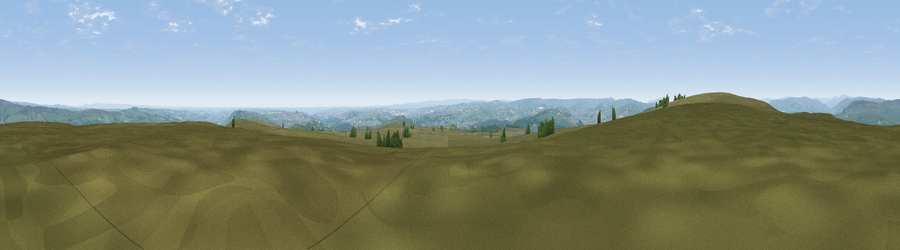

Viewpoint near Ilkley
#8560 in England · top 4% of its area beats it · near IlkleyWhere it is
The exact computed spot (SE 12350 44938). Click the marker for map links.
The view, rendered

A 360° render of this exact spot computed from the terrain model, tree cover and land cover — summer colours, afternoon light, calibrated against photographs of famous viewpoints. Real trees, hedges and buildings will differ in detail.
The panorama
Grey silhouette: terrain skyline in each direction (720 bearings, Earth curvature and refraction included). Dashed green: skyline with trees (+15 m) and buildings (+8 m) as obstacles. Blue strip: how far the ground is visible on each bearing.
Where the view opens
Wedge length = distance to the farthest visible ground on that bearing (vegetation-aware). Rings at 10, 25 and 50 km.
What fills the view
75% grassland · 14% woodland · 8% built-up · 3% cropland
Angular shares of the visible panorama (visual magnitude), not map area. Landscape diversity 0.35 (0–1 Shannon).
Key numbers
More beautiful places nearby
The staircase of upgrades: each row has a higher view potential than everything closer. Driving times are estimates from straight-line distance, calibrated against real road routing — check an actual route before setting out.
| Place | Direction | Drive | Score |
|---|---|---|---|
| Rombald's Moor | WNW · 1 km | ~3 min | 66.1 |
| Viewpoint near Burley-in-Wharfedale | E · 1 km | ~4 min | 66.5 |
| Viewpoint near Addingham | WNW · 5 km | ~10 min | 68.6 |
| Viewpoint near Baildon | SSE · 6 km | ~12 min | 70.4 |
| Viewpoint near Otley | E · 8 km | ~16 min | 77.5 |
| Viewpoint near East Witton | N · 40 km | ~59 min | 77.8 |
| Little Ingleborough | NW · 48 km | ~68 min | 78.8 |
| Viewpoint near Ingleton | NW · 48 km | ~69 min | 79.5 |
53.90046, -1.81353 · source: screening · position refined by local search. Computed location — check access rights before visiting.